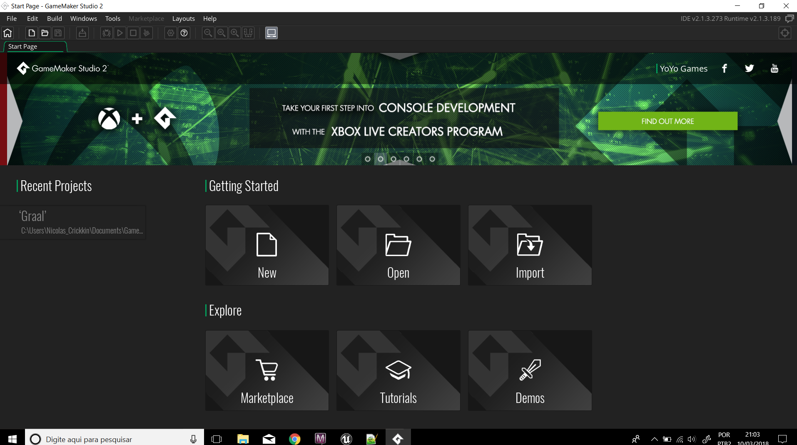
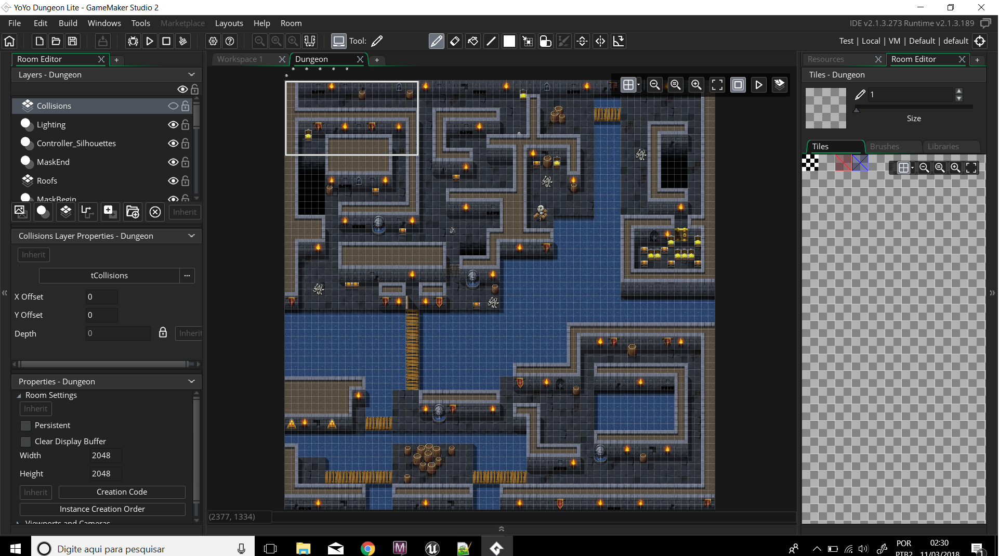

Aprenda a Desenvolver
Por onde começar?
Todas que tem ou já tiveram o desejo de desenvolver jogos se veem com a mesma dúvida no inicio. Por Onde começar?
É uma dúvida bastante compreensivel, dado que o mercado de games ainda é novo.
Para começar, primeiro você deve entender o que são Motores de Jogos. Eles são a ferramenta mais útil
que você terá em suas mãos para desenvolver seus prórpios jogos.
Game Engines
Os motores de jogos, ou Game Engines como são mais conhecidos, são nada mais que softwares desenvolvimentos
especificamente para o Desenvolvimento de jogos. Ele auxilia a ligar todos os atributos que envolvem um jogo: Gráficos, Efeitos sonoros, scripts, etc.
Existem vários Motores de jogos diferentes como Unity, Unreal, Rpg Maker,
Construct, Game Maker, etc. Aqui, aprenderemos mais sobre o desenvolvimento utilizando o
Game Maker Studio.
Game Maker Studio
O Game Maker Studio é uma engine da Yoyo Games
com uma mecanica simples e de fácil uso. Ele oferece duas opções de uso para os desenvolvedores:Drag and Drop e GameMaker Language
O Drang and Drop permite ao desenvolvedor pegar funções já prontas, arrastando-as e colocando no seu projeto. Esta forma é mais
indicada para quem não tem nenhuma noção de programação.
Já o GML(GameMaker Language), se baseia numa programação criada pelo Yoyo Games para maior eficácia dos códigos na aplicação em
desenvolvimento de jogos. Esta linguagem é orientada a objetos e tem uma sintaxe bem simples, tendo algumas semelhanças com as
linguagens C e Javascript.
Ao criar um projeto no Game Maker Studio, é possível ver várias do lado direito, estas pastas são onde serão guardados os recursos do seu jogo, desde scripts GML, até sprites. Assim que você está dentro da interface no Game Maker, é hora de por a mão na massa, crie sprites e scripts, em seguida crie um objeto para aplicar esses sprites e scripts. Depois que os objetos estiverem programados, basta criam uma room para eles.
As Rooms são, como o próprio já diz, salas, que servem para juntar todos os atributos do jogo dando vida ao mesmo. São as famosas Fases dos jogos.